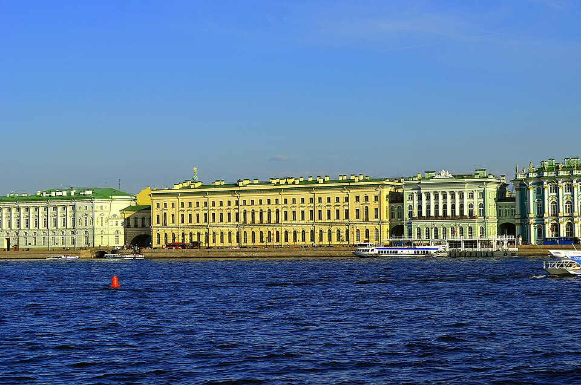
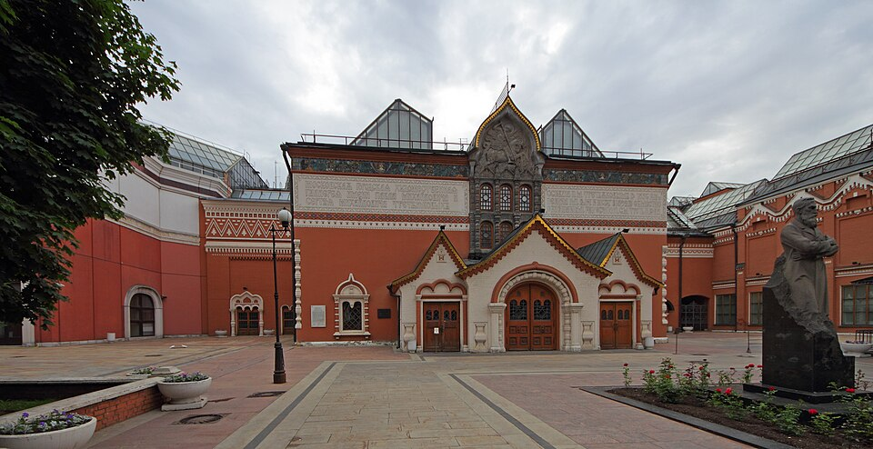
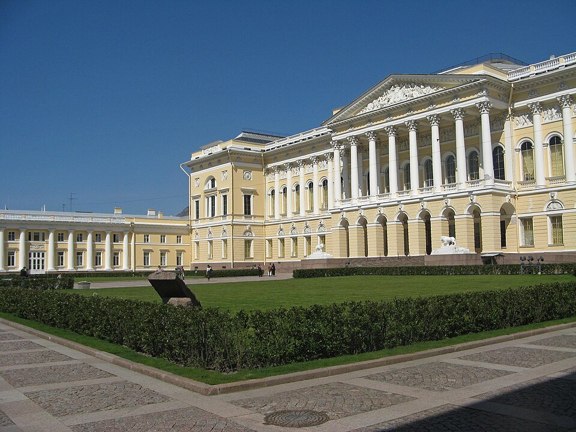
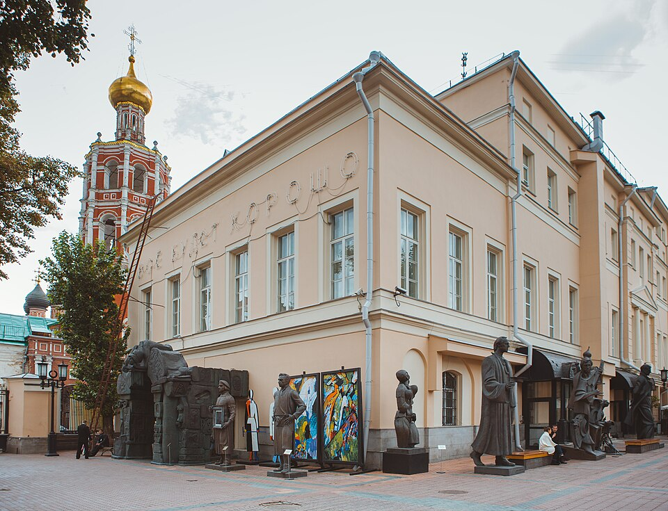
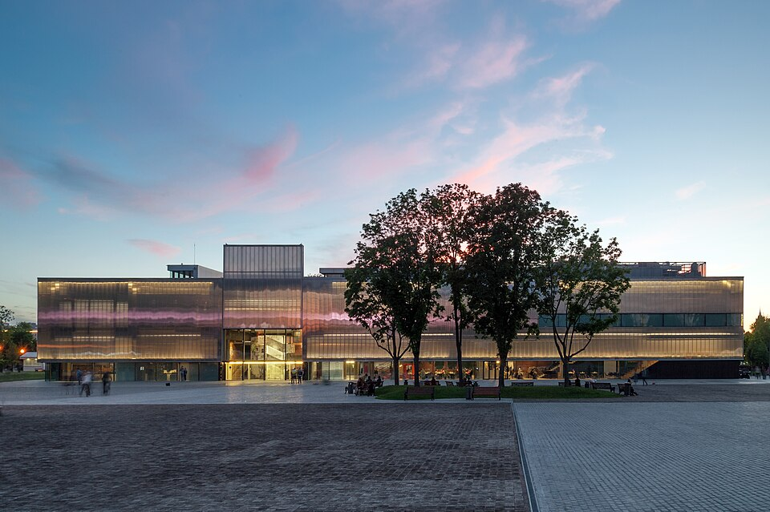
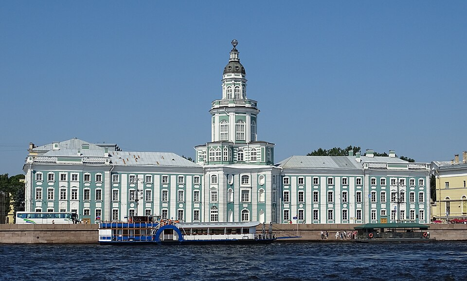

Богатейшие коллекции мирового значения — от древних икон до авангарда XX века

Один из крупнейших и старейших музеев мира. Коллекция насчитывает более 3 миллионов экспонатов, включая шедевры Леонардо да Винчи, Рембрандта и Рафаэля. Занимает шесть исторических зданий на Дворцовой набережной.
Сайт музея
Главный музей русского изобразительного искусства. Основан в 1856 году купцом Павлом Третьяковым. Хранит более 200 000 работ — от древнерусских икон до картин Репина, Врубеля и Кандинского.
Сайт музея
Крупнейший в мире музей русского искусства, основанный в 1895 году. Более 400 000 экспонатов — полотна Левитана, Серова, Врубеля, а также скульптуры и декоративно-прикладное искусство.
Сайт музея
Первый государственный музей современного искусства в России. Основан в 1999 году. Представляет работы российских авангардистов и современных художников в нескольких выставочных площадках города.
Сайт музея
Музей современного искусства, основанный в 2008 году. Здание спроектировано Ремом Колхасом из бывших советских павильонов 1930-х годов. Занимается экспериментальными проектами и арт-резиденциями.
Сайт музея
Первый музей России, основанный Петром I в 1714 году. Коллекция включает более 200 000 предметов — от египетских мумий до этнографических коллекций со всего мира. Знаменита анатомическим кабинетом.
Сайт музея